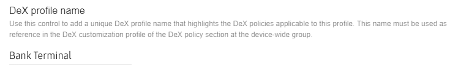

DeX
Last updated September 2nd, 2025
With Knox Service Plugin, you can control and configure the user experience for DeX on your devices.
Enable DeX
Follow these steps to enable DeX policy controls and allow DeX connections on your devices.
-
On your EMM console, add an assignment for the Knox Service Plugin app intended for your target devices, or edit it if one already exists.
-
On the Knox Service Plugin managed configuration, set the following:
Setting Value Device-wide policies > Enable device policy controls True Device-wide policies > DeX policy > Enable DeX policy controls True Device-wide policies > DeX policy > Manage DeX Restrictions > Allow DeX connection True
Basic policy controls
These standard controls allow you to perform simple actions, such as enable or disable DeX. These policies are listed under Device-wide policies > DeX policy > Manage DeX restrictions.
-
Allow Dex connection — Enable this to allow your devices to connect using DeX.
-
Enforce the use of Ethernet connection — Set this to True to disable connections other than ethernet—such as cellular data and Wi-Fi—during DeX mode. Not supported on Knox 3.12 and higher.
-
Enforce the use of virtual MAC address — Set this to True to enforce devices to use a virtual MAC address during DeX mode. This allows your network to recognize your device differently when it’s in DeX mode. Not supported on Knox 3.12 and higher.
-
Manage list of apps disabled in DeX mode — Add a list of apps that are disabled when the device is in DeX mode. Enter apps as a comma separated list of package names. To find application package names, access the Play store on a desktop computer and look for the application. The package name is in the URL of the app’s page on the Play store (For example:
https://play.google.com/store/apps/details?id=PackageName).
DeX customization profile (Premium)
These additional customization options allow you to change the DeX setup and user experience. These policies are listed under DeX customization profile (Premium), and they require a free Knox Platform for Enterprise Premium license.
Before you can configure these policies, you must set Device-wide policies > DeX policy > Customize Dex Experience (Premium) to True.
-
Set home alignment — Choose the alignment of apps on the DeX mode home screen. Not supported on Knox 3.12 and higher.
-
Set screen timeout — Set the screen timeout in seconds for devices in DeX mode. The default screen timeout is 30 seconds.
-
Allow screen timeout change — Set this to False to block device users from modifying the Dex mode screen timeout.
-
Set loading logo — Set a logo image to display when the device is starting DeX mode. Not supported on Knox 3.12 and higher.
-
Logo image location type — Select the appropriate location type for your image file. To use the Base64 string option, convert the source PNG image file to a Base64 encoded string and copy the data to the Logo image content or location field below. Alternatively, you can choose a Web URL or a Local file path.
-
Logo image content or location — Depending upon the location type you selected above, enter the image file path or Web URL in this field. For the base 64 string source type, enter the converted image data in this field.
-
-
Set DeX wallpaper — Set the wallpaper for DeX mode.
-
Wallpaper image — Select the appropriate location type for your wallpaper. To use the Base64 string option, convert the source PNG image file to a Base64 encoded string and copy the data to the Logo image content or location field below. Alternatively, you can choose a Web URL or a Local file path.
Local file path is no longer supported on Android 11 and higher.
-
Image content or location — Depending upon the location type you selected above, enter the image file path or Web URL in this field. For the base 64 string source type, enter the converted image data in this field.
-
Which wallpaper to setup? – Choose if you want to update the wallpaper for the lockscreen, system, or all.
-
-
Skip DeX welcome screen — Set this to True to skip the DeX welcome screen containing the Terms and Conditions that displays when the device connects to DeX for the first time. Not supported on Knox 3.12 and higher.
-
Skip overscan detection screen — Set this to True to skip the automatic detection of overscan boundaries and size adjustment of the overlay screen on the monitor. Not supported on Knox 3.12 and higher.
-
App allowlist to auto-launch on DeX connection — Add a list of apps that will auto-launch into DeX mode if it is in-use right before DeX mode was connected. Enter apps as a comma separated list of package names. Leave this field empty to allow the device user to configure this setting. Not supported on Knox 3.12 and higher.
-
Auto-start DeX on HDMI connection — Set this to True to automatically start DeX mode when the device is connected to HDMI. This feature is only available on Knox 3.4 and higher.
-
Hide apps in app drawer — Add a list of apps that will be hidden from the app drawer in DeX mode. These apps are not disabled by this policy, and can still function normally. Enter apps as a comma separated list of package names.
-
Enable mouse cursor flow — Set this to True to allow mouse cursor movement to extend from the monitor to the host device while in Dual view mode. Not supported on Knox 3.12 and higher.
-
Add application shortcuts on DeX — Add a new configuration for each app shortcut to create on DeX mode. In each configuration, enter the following:
- App package name — Enter the package name of the application.
- Class name — If applicable, enter the application component to launch when the shortcut is used. Leave blank to launch the application from its default screen.
- Position X — X coordinate of the application shortcut on DeX mode.
- Position Y — Y coordinate of the application shortcut on DeX mode.
-
Add URL shortcuts on DeX — Add a new configuration for each URL shortcut to create on DeX mode. In each configuration, enter the following:
- URL — URL to launch for this shortcut.
- Title — Title for the URL shortcut.
- Position X — X coordinate of the URL shortcut on DeX mode.
- Position Y — Y coordinate of the URL shortcut on DeX mode.
- Browser to launch the URL — Select which browser to use to open the URL.
-
Disable buttons on the DeX panel — Choose one or more DeX panel buttons to disable. Not supported on Knox 3.12 and higher.
-
Configure file transfer settings — Choose to enable or disable file copy functionalities between PC and DeX mode device with drag and drop, or copy and paste. Not supported on Knox 3.12 and higher.
-
Configure values in DeX settings menu — Add a new configuration for each DeX setting item to configure. Specify the name of the setting to configure, then set a value for it. You can also choose to prevent device users from modifying it, or completely hide it from device users.
-
Configure the number of apps open limit on DeX — Set the limit on how many apps can be open at once on DeX. The limit must be between 5 and 15 apps. If this policy is left blank, the default app limit is 5.
This policy is only supported on external display mode. Configuring the open app limit for DeX running in standalone mode is not supported.
-
Configure DeX Stabilizer mode — Enable or disable DeX Stabilizer mode. Only supported on Android 12 and higher, and on Australian models only.
Configure DeX Stabilizer mode is no longer supported starting from Knox 3.9.
Enable DeX with basic customization example
This example shows you how to enable DeX so it auto-launches and sets a specific screen timeout. Note that all DeX customization policies require a free Knox Platform for Enterprise Premium license.
-
In your supported UEM, set Device-wide policies > Enable device policy controls to True.
-
Set Device-wide policies > DeX policy > Enable DeX policy controls to True.
-
Under Manage DeX Restrictions, enable Allow DeX connection.
-
Under DeX customization profile, enable Auto-start DeX on HDMI connection.
-
Under DeX customization profile, find Set screen timeout and input your desired value.
-
Under DeX customization profile, disable Allow screen timeout change.
-
The device now launches DeX automatically when it is plugged in to an HDMI cable.
-
Once the device is connected to DeX, a Display resolution screen displays. Select a single resolution value for the connected display. Unselected display options will be greyed out and unavailable. Keep in mind, changing the resolution makes displayed windows, text and other items appear small or larger. Options include, WQHD (2560 x 1440), FHD (1920 x 1080) recommended setting, HD+ (1600 x 900), WQXGA (2560 x 1600), WUXGA (1920 x 1200), or UWQHD (3440 x 1440). Select Done to commit the selected display setting.
If the display resolution provided is not supported, then FHD (1920 x 1080) is selected by default and non-supported resolutions are greyed out in the DeX Display resolution screen.
Industry example
This example configures a tablet in DeX mode, so a bank employee can use it to help customers with day to day operations. For example opening a new account or checking account balances. In this use case, DeX is used as a dedicated employee work station and the bank can slowly phase out older, single-purpose computer terminals.
These instructions do not apply to any specific UEM. Refer to your UEM documentation for specific instructions on menu structure and navigation.
-
In your supported UEM, under the Device-wide policies (Device Owner) category turn on Enable device policy controls.
-
Under DeX Policy, turn on Enable DeX policy controls.
-
Under Manage DeX Restrictions, enable Allow DeX connection.
-
Under Manage DeX Restrictions, enable Customize DeX Experience.
-
Set the DeX profile name to an appropriate value. For example, the following image shows a profile called Bank Terminal.

-
Under DeX customization profile, type the name of the DeX Profile you set in the previous step. In this example, it is Bank Terminal
-
Under DeX customization profile, enable DeX Auto Start on HDMI connection This setting minimizes potential troubleshooting for employees and can reduce IT overhead. If a device is unplugged, setting up the bank terminal again is as simple as plugging the device back in to an HDMI cable.
-
Under DeX customization profile, enable Disable buttons on the DeX panel. Select the buttons you want to disable. For example, selecting Exit DeX button prevents users from exiting the bank terminal and using the device for other purposes.
-
Under DeX customization profile, turn on Skip overscan detection screen. The overscan screen is a setting that automatically tries to optimize the UI according to the monitor you are using. This setting is unnecessary for this use-case.
-
Under DeX customization profile, enable Add application shortcuts on DeX. You can now add relevant bank services that employees need to use to the DeX homescreen. To do add apps, list the app packages in the App package name dialog.
-
In your UEM, save the profile and push it to a device.
-
Once configured and pushed to a device, DeX auto launches with your company profile and policies applied.
DeX Customization features do not always return errors in debug mode. This omission can happen if your device may not have the correct OS or DeX version installed. If the framework on your device does not support your policies, then they are not applied.
On this page
Is this page helpful?